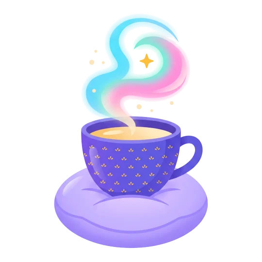

Tutto libero ✨
Aggiungi la tua prima attività con il pulsante qui sotto.
Completate oggi 0
Niente in programma 🗓️
Le attività con una data da domani in poi compaiono qui.
Minuti di focus: nessuno per ora
Completate
Qui compaiono le attività completate.
I dati restano solo su questo dispositivo.